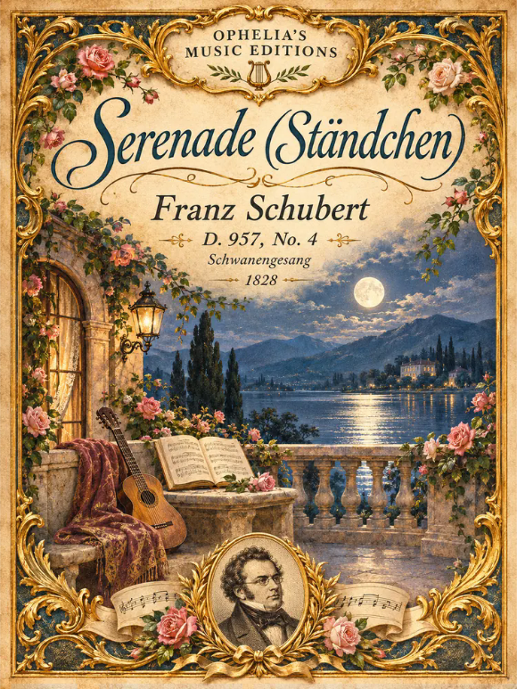

OPHELIA’S MUSIC EDITIONS · SELECTION XIV
Serenade (Ständchen)
Franz Schubert (1797–1828) · D. 957, No. 4 · Schwanengesang
Illustrated musical edition

Listen
Jason M. C. Han · solo-piano interpretation · 3 min 40 sec. Recording: CC BY-SA 4.0; original recording and attribution. This recording is presented without alteration.
Free sheet music
The original public-domain 1829 first-volume score of Schwanengesang, containing the complete vocal-and-piano Serenade (No. 4). This historical volume contains several songs, not just Serenade.
If the preview fails, use a PDF link above. Google PDF viewing depends on the source server. Score source and public-domain information ↗. The printed score and licensed audio may have different instrumentation.